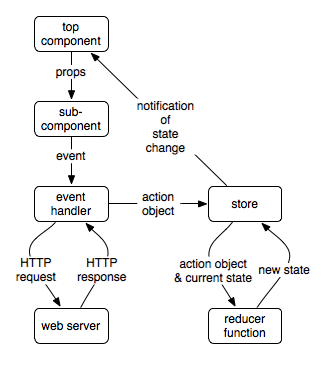

This article compares two popular web app frameworks, Angular 2 (beta.0) and React (0.14). It does not provide detailed explanations on how to use them. There are many other web tutorials that provide that level of detail. The focus of this article is to show side-by-side comparisons of the corresponding pieces in a sample application.
Lance has been working with Angular 2 since August 2015. He provided the Angular 2 code here. Lance finds Angular 2 components to be syntactically simpler and semantically more powerful than Angular 1. Angular 2 is now in beta. There may be more breaking changes before the official release.
Mark started investigating React about the same time and has about two weeks of experience in actually using it. He provided the React code here. Mark has been using Angular 1 for almost three years, so he knows that well. He has only read about Angular 2, so he barely knows that.
The Angular team now refers to Angular 1 as "AngularJS" and Angular 2 as "Angular". So we will use "Angular" to refer to Angular 2 throughout the rest of this article.
This article compares the code for implementing a typical demo Todo app. Some may feel that this app is too small to use as a basis for comparison, but we think it demonstrates enough features to provide value. The main aspects it demonstrates are how components are defined and how events are handled.
We attempt to anticipate the things proponents of the two frameworks might say about the code. These are labelled with AP for "Angular Proponent" and RP for "React Proponent".
The fundamental building blocks of an Angular app are directives. Directives with a view are called components, and these account for the majority of Directives in most apps. The intention is that developers will be able to create easily reusable components for their applications that are also easy to reason about. Angular components will be largely interchangeable with Web Components, so that they will be able to work well with other frameworks.
Angular components have input and output properties to allow interaction with other components. For example, a component could set up its view based on configuration it receives from its parent component and then be notified to change its appearance by an event it receives from a child or sibling component.
Angular is built with significant support for dependency injection (so a component can receive the necessary singleton services) and routing, but that is beyond the scope of this article.
React emphasizes the use of stateless components that only use data that is passed to them via "props". Props are values specified in JSX attributes. JSX is an HTML-like XML syntax for specifying the DOM representation of components. It is embedded in JavaScript code, colocated with related logic such as component lifecycle methods and event handling methods. Event handling methods can make Ajax calls. They also typically create action objects that describe the event and dispatch them to a "store". A store manages making changes to data used by the application ("state") and notifies interested components when it changes.
One popular state management library, Redux, holds all app data in a single store. It is considered to be a variant of the Flux architecture. Pure functions called "reducers" are written to handle these actions. Reducers are passed an action object and the current state. They return the new state.
Components can register to listen for state changes. When they are notified, they typically re-render themselves. This is made efficient through the use of a virtual DOM, which is an in-memory representation of what the browser is currently displaying. React creates a new version of the virtual DOM, diffs it against the current version, and only makes the minimal set of required DOM modifications.
One of the most appealing features of React is the way it divides development into distinct tasks. Development of most components begins by only thinking about how to render data passed to it. Then, event handling is considered. This optionally makes Ajax calls and dispatches actions. Event handling does not update the UI. Finally, resolver functions are written to update the state based on a provided action.

The code for both versions is in Github at
https://github.com/mvolkmann/react-examples.
See the todo (React) and
todo-ng2 (Angular) directories.
The Angular code uses TypeScript.
Surveys of developers interested in Angular reveal that most
plan to use TypeScript instead of JavaScript in future apps.
This code includes the file tsconfig.json
which provides configuration for the TypeScript compiler,
but we won't examine that file.
TSLint
is used to check for potential issues in the TypeScript code.
The React version uses
Babel
to transpile ES6 code to ES5.
It uses ESLint
to check for potential issues in the JavaScript code.
See todo/webpack.config.js for details.
Both versions of the app use
webpack
to build the app into bundle files.
See their todo/webpack.config.js files for details.
Here's a screenshot of the app.

There are four things a user can do in this app.
The instructions for running both version are the same.
npm installnpm start
Both versions have dependencies on npm packages.
Here are the package.json files that show these.
| Angular | React |
|---|---|
{
"name": "ng2-todo",
"version": "1.0.0",
"description": "Todo app in Angular",
"scripts": {
"start": "webpack-dev-server
--content-base src --inline --port 8081"
},
"devDependencies": {
"ts-loader": "^0.7.2",
"tslint": "^3.0.0-dev.1",
"typescript": "^1.7.3",
"webpack": "^1.12.9",
"webpack-dev-server": "^1.14.0"
},
"dependencies": {
"angular2": "2.0.0-beta.0",
"es6-promise": "3.0.2",
"es6-shim": "0.33.3",
"reflect-metadata": "0.1.2",
"rxjs": "5.0.0-beta.0",
"zone.js": "0.5.10"
}
}
|
{
"name": "react-todo",
"version": "1.0.0",
"description": "Todo app in React",
"scripts": {
"start": "webpack-dev-server
--content-base . --inline"
},
"devDependencies": {
"babel-core": "^6.1.2",
"babel-loader": "^6.0.1",
"babel-preset-es2015": "^6.1.18",
"babel-preset-react": "^6.1.2",
"eslint": "^1.6.0",
"eslint-loader": "^1.0.0",
"eslint-plugin-react": "^3.5.1",
"webpack": "^1.12.9",
"webpack-dev-server": "^1.14.0"
},
"dependencies": {
"react": "^0.14.3",
"react-dom": "^0.14.3"
}
}
|
package.json file
sure lists a lot of dev dependencies.
The main HTML file for both apps is index.html.
These files are very similar.
Since both versions are built using webpack,
the only JavaScript file they need to reference
is bundle.js.
| Angular | React |
|---|---|
<!DOCTYPE html>
<html>
<head>
<title>Angular Todo App</title>
<link rel="stylesheet" href="todo.css">
</head>
<body>
<todo-list>Loading...</todo-list>
<script src="bundle.js"></script>
</body>
</html>
|
<!DOCTYPE html>
<html>
<head>
<title>React Todo App</title>
<link rel="stylesheet" href="todo.css">
</head>
<body>
<div id="container"></div>
<script src="build/bundle.js"></script>
</body>
</html>
|
The CSS is the same for both versions of the app.
Here is todo.css.
body {
font-family: sans-serif;
padding-left: 10px;
}
button {
margin-left: 10px;
}
li {
margin-top: 5px;
}
ul.unstyled {
list-style: none;
margin-left: 0;
padding-left: 0;
}
.done-true {
color: gray;
text-decoration: line-through;
}
|
Both the React and Angular versions use two JavaScript files, one for each of the components, Todo and TodoList.
Here are the source files for the TodoList component, which represents the entire UI for the app.
Angular todoListCmp.ts |
React todo-list.js |
|---|---|
import 'angular2/bundles/angular2-polyfills';
import {Component} from 'angular2/core';
import {bootstrap} from 'angular2/platform/browser';
import {TodoCmp, ITodo} from "./todoCmp";
|
import React from 'react'; import ReactDOM from 'react-dom'; import Todo from './todo'; |
// Used for type of state property in TodoListCmp class.
// Both properties are optional.
interface IState {
todos?: ITodo[];
todoText?: string;
}
|
|
// This syntax is called a Decorator and is similar
// to Annotations in other languages. Decorators are
// under consideration to be included in ES2016.
// The Component decorator indicates that
// TodoListCmp is a reusable UI building block.
@Component({
// other components used here
directives: [TodoCmp],
// TodoListCmp's HTML element selector
selector: 'todo-list',
template: // see value to left of
// React render method below
})
|
|
export class TodoListCmp {
private static lastId: number = 0;
private state: IState;
constructor() {
this.state = {
todos: [
TodoListCmp.createTodo('learn Angular', true),
TodoListCmp.createTodo('build an Angular app')
]
};
}
|
let lastId = 0; // no static class properties in ES6
class TodoList extends React.Component {
constructor() {
super(); // must call before accessing "this"
this.state = {
todos: [
TodoList.createTodo('learn React', true),
TodoList.createTodo('build a React app')
]
};
}
|
static createTodo(
text: string, done: boolean = false): ITodo {
return {id: ++TodoListCmp.lastId, text, done};
}
|
static createTodo(text, done = false) {
return {id: ++TodoList.lastId, text, done};
}
|
get uncompletedCount(): number {
return this.state.todos.reduce(
(count: number, todo: ITodo) =>
todo.done ? count : count + 1,
0);
}
|
get uncompletedCount() {
return this.state.todos.reduce(
(count, todo) =>
todo.done ? count : count + 1,
0);
}
|
onAddTodo(): void {
const newTodo: ITodo =
TodoListCmp.createTodo(this.state.todoText);
this.state.todoText = '';
this.state.todos = this.state.todos.concat(newTodo);
}
|
onAddTodo() {
const newTodo =
TodoList.createTodo(this.state.todoText);
this.setState({
todoText: '',
todos: this.state.todos.concat(newTodo)
});
}
|
onArchiveCompleted(): void {
this.state.todos =
this.state.todos.filter((t: ITodo) => !t.done);
}
|
onArchiveCompleted() {
this.setState({
todos: this.state.todos.filter(t => !t.done)
});
}
|
onChange(newText: string): void {
this.state.todoText = newText;
}
|
onChange(name, event) {
this.setState({[name]: event.target.value});
}
|
onDeleteTodo(todoId: number): void {
this.state.todos = this.state.todos.filter(
(t: ITodo) => t.id !== todoId);
}
|
onDeleteTodo(todoId) {
this.setState({
todos: this.state.todos.filter(
t => t.id !== todoId)
});
}
|
onToggleDone(todo: ITodo): void {
const id: number = todo.id;
this.state.todos = this.state.todos.map(
(t: ITodo) => t.id === id ?
{id, text: todo.text, done: !todo.done} :
t);
}
|
onToggleDone(todo) {
const id = todo.id;
const todos = this.state.todos.map(t =>
t.id === id ?
{id, text: todo.text, done: !todo.done} :
t);
this.setState({todos});
}
|
// This is the value of the |
render() {
// Can assign part of the generated UI
// to a variable and refer to it later.
const todos = this.state.todos.map(todo =>
<Todo key={todo.id} todo={todo}
onDeleteTodo=
{this.onDeleteTodo.bind(this, todo.id)}
onToggleDone=
{this.onToggleDone.bind(this, todo)}/>);
return (
<div>
<h2>To Do List</h2>
<div>
{this.uncompletedCount} of
{this.state.todos.length} remaining
<button
onClick={() => this.onArchiveCompleted()}>
Archive Completed
</button>
</div>
<br/>
<form>
<input type="text" size="30" autoFocus
placeholder="enter new todo here"
value={this.state.todoText}
onChange=
{e => this.onChange('todoText', e)}/>
<button disabled={!this.state.todoText}
onClick={() => this.onAddTodo()}>
Add
</button>
</form>
<ul className="unstyled">{todos}</ul>
</div>
);
}
|
} // end of TodoListCmp class // Each Angular app needs a bootstrap call // to explictly specify the root component. // In larger apps, bootstrapping is usually in // a separate file with more configuration. bootstrap(TodoListCmp); |
} // end of TodoList class
// This renders a TodoList component
// inside a specified DOM element.
// If TodoList was used in more than one place,
// this would be moved to a different JavaScript file.
ReactDOM.render(
<TodoList/>,
document.getElementById('container'));
|
class becomes className
and for (used on label elements)
becomes htmlFor.
This is done because class and for
are reserved words in JavaScript.
XML comments are not supported, but multi-line JavaScript comments are.
template property of the @Component decorator?
@Component decorator supports both
a template property to define the markup inline,
and a templateUrl property
to define the markup in a separate file.
Generally template is used for shorter components,
and templateUrl is used for longer components.
bind for event handling function
isn't intuitive. The Angular way is easier to read.
bind is a part of JavaScript not often used by developers,
but it must be learned in order to use React.
* indicates that the directive modifies the DOM.
The most common examples are *ngFor
(which loops over an array to build an arbitrary amount of markup)
and *ngIf (which includes or excludes markup).
These are actually syntactic sugar for more verbose constructs.
# indicates the declaration of a variable.
In this case, we are defining #todo as the loop variable.
Subsequent references use that variable,
so they do not need the #.
[] indicate a property binding,
where the element receives a value from the component
(like setting the initial value on an input).
() indicate an event binding,
where the element produces an event for the component
(like invoking a function when a value is changed).
[(ngModel)]="componentProperty".
In this example, the element will be populated
from componentProperty, and any change in value
in the element will propagate to componentProperty.
Here are the source files for the Todo component, which represents a single item in the list.
Angular todoCmp.ts |
React todo.js |
|---|---|
import {Component, Input, Output, EventEmitter}
from 'angular2/angular2';
export interface ITodo {
id: number;
text: string;
done: boolean;
}
@Component({
selector: 'todo',
template: `
<li>
<input type="checkbox"
[checked]="todo.done"
(change)="toggleDone()"/>
<span [ng-class]="'done-' + todo.done">
{{todo.text}}
</span>
<button (click)="deleteTodo()">Delete</button>
</li>`
})
export class TodoCmp {
// @Input allows this component to receive
// initialization values from the containing component.
@Input() todo: ITodo;
// @Output allows this component to
// publish values to the containing component.
@Output() onDeleteTodo:
EventEmitter<number> = new EventEmitter<number>();
@Output() onToggleDone:
EventEmitter<ITodo> = new EventEmitter<ITodo>();
deleteTodo(): void {
this.onDeleteTodo.next(this.todo.id);
}
toggleDone(): void {
this.onToggleDone.next(this.todo);
}
}
|
import React from 'react';
// There are three ways to define React components.
// This is the stateless function component form
// which only receives data through "props".
// A props object is passed to this function
// and destructured.
const Todo = ({onDeleteTodo, onToggleDone, todo}) =>
<li>
<input type="checkbox"
checked={todo.done}
onChange={onToggleDone}/>
<span className={'done-' + todo.done}>
{todo.text}
</span>
<button onClick={onDeleteTodo}>Delete</button>
</li>;
// Optional validation of props.
const PropTypes = React.PropTypes;
Todo.propTypes = {
todo: PropTypes.object.isRequired,
onDeleteTodo: PropTypes.func.isRequired,
onToggleDone: PropTypes.func.isRequired
};
export default Todo;
|
If you choose to use Angular, you will need to learn:
*, #, [], and ()NgClass, NgFor,
NgForm, NgIf, NgModel,
NgSelectOption, NgStyle,
and NgSwitchIf you choose to use React, you will need to learn:
NgFor and pipes
are handled with plain JavaScript in React.
This is why some people say that React feels more like
coding in JavaScript than Angular and
doesn't require learning as many framework-specific concepts.
For example, if we have an array of user objects and
want to output their last names in all uppercase,
we can do this in Angular:
<div ngFor="#user of users">{{user.lastName | uppercase}}</div>and this in React:
users.map(user => <div>{user.lastName.toUpperCase()}</div>)
[class.disabled]="disabledProperty"
to set the disabled class programmatically), but the same can be done
in JavaScript. Additionally, the Angular team plans to add
syntactic sugar as the framework evolves through the Beta period,
so it's likely that there will be Angular template constructs that
are clearly advantageous by the time the framework is fully released.
Both the Angular and React frameworks are strong contenders with sizable user communities and large corporate backing. They have somewhat different philosophies, and these differences will likely cause you to lean toward one over the other. There are many other JavaScript-based web frameworks that could be considered, but none that approach the popularity and support of these two.